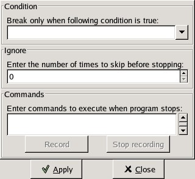

Table Of Contents
- 11. Debugging

GPS is also a graphical front-end for text-based debuggers such as GDB. A knowledge of the basics of the underlying debugger used by GPS will help understanding how GPS works and what kind of functionalities it provides.
Please refer to the debugger-specific documentation - e.g. the GNAT User’s Guide (chapter Running and Debugging Ada Programs) or the GDB documentation for more details.
Debugging is tightly integrated with the other components of GPS. For example, it is possible to edit files and navigate through your sources while debugging.
To start a debug session, go to the menu Debug->Initialize, and choose either the name of your executable, if you have specified the name of your main program(s) in the project properties, or start an empty debug session using the <no main file> item. It is then possible to load any file to debug, by using the menu Debug->Debug->Load File...
Note that you first need to build your executable with debug information (-g switch), either explicitly as part of your project properties, or via the Debug build mode (see The Build Mode for more details).
Note that you can create multiple debuggers by using the Initialize menu several times: this will create a new debugger each time. All the debugger-related actions (e.g. stepping, running) are performed on the current debugger, which is represented by the current debugger console. To switch between debuggers, simply select its corresponding console.
After the debugger has been initialized, you have access to two new windows: the data window (in the top of the working area), and the debugger console (in a new page, after the Messages and Shell windows). All the menus under Debugger are now also accessible, and you also have access to additional contextual menus, in particular in the source editor where it is possible to easily display variables, set breakpoints, and get automatic display (via tool tips) of object values.
When you want to quit the debugger without quitting GPS, go to the menu Debug->Terminate Current, that will terminate your current debug session, or the menu Debug->Terminate that will terminate all your debug sessions at once.
The call stack window gives a list of frames corresponding to the current execution stack for the current thread/task.

The bottom frame corresponds to the outermost frame where the thread is currently stopped. This frame corresponds to the first function executed by the current thread (e.g main if the main thread is in C). You can click on any frame to switch to the caller’s context, this will update the display in the source window. See also the up and down buttons in the tool bar to go up and down one frame in the call stack.
The contextual menu (right mouse button) allows you to choose which information you want to display in the call stack window (via check buttons):
By default, only the subprogram name is displayed. You can hide the call stack window by closing it, as for other windows, and show it again using the menu Data->Call Stack.
The Data Window is the area in which various information about the debugged process can be displayed. This includes the value of selected variables, the current contents of the registeres, the local variables, ...
This window is not open by default when you start the debugger. It will be created automatically when needed (e.g. when using the Debug constextual menu to display a variable). You can also force its display through the menu Debug->Data->Data Window.
However, if you save the desktop through the menu File->Save More->Desktop while the data window is open, it will be automatically reopen the next time the desktop is loaded, for instance when restarting GPS.
The contents of the data window is preserved by default whenever you close it. Thus, if you reopen the data window either during the same debugger session, or automatically when you start a debugger on the same executable, it will display the same items again. This behavior is controlled by the Preserve State on Exit preference.
The data window contains all the graphic boxes that can be accessed using the Data->Display menu items, or the data window Display Expression... contextual menu, or the source window Display contextual menu items, or finally the graph command in the debugger console.
For each of these commands, a box is displayed in the data window with the following information:

A title bar containing:
The number of this expression: this is a positive number starting from 1 and incremented for each new box displayed. It represents the internal identifier of the box.
The name of the expression: this is the expression or variable specified when creating the box.
An icon representing either a flash light, or a lock. .. index:: icon
This is a click-able icon that will change the state of the box from automatically updated (the flash light icon) to frozen (the lock icon). When frozen, the value is grayed, and will not change until you change the state. When updated, the value of the box will be recomputed each time an execution command is sent to the debugger (e.g step, next).
An icon representing an ‘X’. .. index:: icon
You can click on this icon to close/delete any box.
A main area.
The main area will display the data value hierarchically in a language-sensitive manner. The canvas knows about data structures of various languages (e.g C, Ada, C++) and will organize them accordingly. For example, each field of a record/struct/class, or each item of an array will be displayed separately. For each subcomponent, a thin box is displayed to distinguish it from the other components.
A contextual menu, that takes into account the current component selected by the mouse, gives access to the following capabilities:
Hides all subcomponents of the selected item. To select a particular field or item in a record/array, move your mouse over the name of this component, not over the box containing the values for this item.
Shows all subcomponents of the selected item.
Clones the selected component into a new, independent item.
Brings up the memory view dialog and explore memory at the address of the component.
Set value of *component*
Sets the value of a selected component. This will open an entry box where you can enter the new value of a variable/component. Note that GDB does not perform any type or range checking on the value entered.
Refreshes the value displayed in the selected item.
Shows only the value of the item.
Shows only the type of each field for the item.
Enables or disables the automatic refreshing of the item upon program execution (e.g step, next).
A contextual menu can be accessed in the canvas itself (point the mouse to an empty area in the canvas, and click on the right mouse button) with the following entries:
Open a small dialog letting you specify an arbitrary expression in the Data Window. This expression can be a variable name, or a more complex expression, following the syntax of the current language and underlying debugger. See the documentation of e.g gdb for more details on the syntax. The check button Expression is a subprogram call should be enabled if the expression is actually not an expression but rather a debugger command (e.g p/x var) or a procedure call in the program being debugged (e.g call my_proc).
Enables or disables alignment of items on the grid.
Enables or disables the automatic detection of shared data structures. Each time you display an item or dereference a pointer, all the items already displayed on the canvas are considered and their addresses are compared with the address of the new item to display. If they match, (for example if you tried to dereference a pointer to an object already displayed) instead of creating a new item a link will be displayed.
Redisplays the items in the data window with a bigger font
Displays the items in the data window with smaller fonts and pixmaps. This can be used when you have several items in the window and you can’t see all of them at the same time (for instance if you are displaying a tree and want to clearly see its structure).
Allows you to choose the zoom level directly from a menu.
When this item is selected, all the boxes currently displayed are removed.
All the items on the canvas have some common behavior and can be fully manipulated with the mouse. They can be moved freely anywhere on the canvas, simply by clicking on them and then dragging the mouse. Note that if you are trying to move an item outside of the visible area of the data window, the latter will be scrolled so as to make the new position visible.
Automatic scrolling is also provided if you move the mouse while dragging an item near the borders of the data window. As long as the mouse remains close to the border and the button is pressed on the item, the data window is scrolled and the item is moved. This provides an easy way to move an item a long distance from its initial position.
Most of the items are displayed using several colors, each conveying a special meaning. Here is the meaning assigned to all colors (note that the exact color can be changed through the preferences dialog; these are the default colors):

black
This is the default color used to print the value of variables or expressions.
This color is used for C pointers (or Ada access values), i.e. all the variables and fields that are memory addresses that denote some other value in memory.
You can easily dereference these (that is to say see the value pointed to) by double-clicking on the blue text itself.
red
This color is used for variables and fields whose value has changed since the data window was last displayed. For instance, if you display an array in the data window and then select the Next button in the tool bar, then the elements of the array whose value has just changed will appear in red.
As another example, if you choose to display the value of local variables in the data window (Display->Display Local Variables), then only the variables whose value has changed are highlighted, the others are left in black.
Several different icons can be used in the display of items. They also convey special meanings.
trash bin icon
This icon indicates that the debugger could not get the value of the variable or expression. There might be several reasons, for instance the variable is currently not in scope (and thus does not exist), or it might have been optimized away by the compiler. In all cases, the display will be updated as soon as the variable becomes visible again.
package icon
This icon indicates that part of a complex structure is currently hidden. Manipulating huge items in the data window (for instance if the variable is an array of hundreds of complex elements) might not be very helpful. As a result, you can shrink part of the value to save some screen space and make it easier to visualize the interesting parts of these variables.
Double-clicking on this icon will expand the hidden part, and clicking on any sub-rectangle in the display of the variable will hide that part and replace it with that icon.
See also the description of the contextual menu to automatically show or hide all the contents of an item. Note also that one alternative to hiding subcomponents is to clone them in a separate item (see the contextual menu again).

The breakpoint editor can be accessed from the menu Data->Edit Breakpoints. It allows manipulation of different kinds of breakpoints: at a source location, on a subprogram, at an executable address, on memory access (watchpoints), and on Ada exceptions.
You can double-click on any breakpoint in the list to open the corresponding source editor at the right location. Alternatively, you can select the breakpoint and then click on the View button.
The top area provides an interface to create the different kinds of breakpoints, while the bottom area lists existing breakpoints and their characteristics.
It is possible to access advanced breakpoint characteristics for a given breakpoint. First, select a breakpoint in the list. Then, click on the Advanced button, which will display a new dialog window. You can specify commands to run automatically after a breakpoint is hit, or specify how many times a selected breakpoint will be ignored. If running VxWorks AE, you can also change the Scope and Action settings for breakpoints.
In VxWorks AE breakpoints have two extra properties:
Scope: .. index:: scope
which task(s) can hit a given breakpoint. Possible Scope values are:
task: .. index:: task
the breakpoint can only be hit by the task that was active when the breakpoint was set. If the breakpoint is set before the program is run, the breakpoint will affect the environment task
pd: .. index:: protection domain
any task in the current protection domain can hit that breakpoint
any:
any task in any protection domain can hit that breakpoint. This setting is only allowed for tasks in the Kernel domain.
Action: .. index:: action
when a task hits a breakpoints, which tasks are stopped:
task: .. index:: task
stop only the task that hit the breakpoint.
pd: .. index:: protection domain
stop all tasks in the current protection domain
all: stop all breakable tasks in the system
These two properties can be set/changed through the advanced breakpoints characteristics by clicking on the Advanced button. There are two ways of setting these properties:
Per breakpoint settings:
after setting a breakpoint (the default Scope/Action values will be task/task), select the Scope/Action tab in the Advanced settings. To change these settings on a given breakpoint, select it from the breakpoints list, select the desired values of Scope and Action and click on the Update button.
Default session settings:
select the Scope/Action tab in the Advanced settings. Select the desired Scope and Action settings, check the Set as session defaults check box below and click the Close button. From now on, every new breakpoint will have the selected values for Scope and Action.
If you have enabled the preference Preserve state on exit, GPS will automatically save the currently set breakpoints, and restore them the next time you debug the same executable. This allows you to immediately start debugging your application again, without reseting the breakpoints every time.
The memory window allows you to display the contents of memory by specifying either an address, or a variable name.
To display memory contents, enter the address using the C hexadecimal notation: 0xabcd, or the name of a variable, e.g foo, in the Location text entry. In the latter case, its address is computed automatically. Then either press Enter or click on the View button. This will display the memory with the corresponding addresses in the bottom text area.
You can also specify the unit size (Byte, Halfword or Word), the format (Hexadecimal, Decimal, Octal or ASCII), and you can display the corresponding ASCII value at the same time.
The up and down arrows as well as the Page up and Page down keys in the memory text area allows you to walk through the memory in order of ascending/descending addresses respectively.
Finally, you can modify a memory area by simply clicking on the location you want to modify, and by entering the new values. Modified values will appear in a different color (red by default) and will only be taken into account (i.e written to the target) when you click on the Submit changes button. Clicking on the Undo changes or going up/down in the memory will undo your editing.
Clicking on Close will close the memory window, canceling your last pending changes, if any.
When debugging, the left area of each source editor provides the following information:
Lines with code
In this area, blue dots are present next to lines for which the debugger has debug information, in other words, lines that have been compiled with debug information and for which the compiler has generated some code. Currently, there is no check when you try to set a breakpoint on a non dotted line: this will simply send the breakpoint command to the underlying debugger, and usually (e.g in the case of gdb) result in setting a breakpoint at the closest location that matches the file and line that you specified.
This is a green arrow showing the line about to be executed.
For lines where breakpoints have been set, a red mark is displayed on top of the blue dot for the line. You can add and delete breakpoints by clicking on this area (the first click will set a breakpoint, the second click will remove it).
The second area in the source window is a text window on the right that displays the source files, with syntax highlighting. If you leave the cursor over a variable, a tooltip will appear showing the value of this variable. Automatic tooltips can be disabled in the preferences menu.
See Preferences Dialog.
When the debugger is active, the contextual menu of the source window contains a sub menu called Debug providing the following entries.
Note that these entries are dynamic: they will apply to the entity found under the cursor when the menu is displayed (depending on the current language). In addition, if a selection has been made in the source window the text of the selection will be used instead. This allows you to display more complex expressions easily (for example by adding some comments to your code with the complex expressions you want to be able to display in the debugger).
Prints the selection (or by default the name under the cursor) in the debugger console.
Displays the selection (or by default the name under the cursor) in the data window. The value will be automatically refreshed each time the process state changes (e.g after a step or a next command). To freeze the display in the canvas, you can either click on the corresponding icon in the data window, or use the contextual menu for the specific item (see The Data Window for more information).
Brings up the memory view dialog and explores memory at the address of the selection.
Sets a breakpoint on the line under the cursor, in the current file.
Continues execution (the program must have been started previously) until it reaches the specified line.
Jumps to the current line of execution. This is particularly useful after navigating through your source code.
It is sometimes convenient to look at the assembly code for the subprogram or source line you are currently debugging.
You can open the assembly window by using the menu Debug->Data->Assembly.

The current assembly instruction is highlighted with a green arrow on its left. The instructions corresponding to the current source line are highlighted in red by default. This allows you to easily see where the program counter will point to, once you have pressed the “Next” button on the tool bar.
Moving to the next assembly instruction is done through the “Nexti” (next instruction) button in the tool bar. If you choose “Stepi” instead (step instruction), this will also jump to the subprogram being called.
For efficiency reasons, only a small part of the assembly code around the current instruction is displayed. You can specify in the Preferences Dialog how many instructions are displayed by default. Also, you can easily display the instructions immediately preceding or following the currently displayed instructions by pressing one of the Page up or Page down keys, or by using the contextual menu in the assembly window.
A convenient complement when debugging at the assembly level is the ability of displaying the contents of machine registers. When the debugger supports it (as gdb does), you can select the Data->Display Registers menu to get an item in the canvas that will show the current contents of each machine register, and that will be updated every time one of them changes.
You might also choose to look at a single register. With gdb, select the Data->Display Any Expression, entering something like:
output /x $eax
in the field, and selecting the toggle button “Expression is a subprogram call”. This will create a new canvas item that will be refreshed every time the value of the register (in this case eax) changes.
This is the text window located at the bottom of the main window. In this console, you have direct access to the underlying debugger, and can send commands (you need to refer to the underlying debugger’s documentation, but usually typing help will give you an overview of the commands available).
If the underlying debugger allows it, pressing Tab in this window will provide completion for the command that is being typed (or for its arguments).
There are also additional commands defined to provide a simple text interface to some graphical features.
Here is the complete list of such commands. The arguments between square brackets are optional and can be omitted.
graph (print|display) expression [dependent on display_num] [link_name name] [at x, y] [num num]
This command creates a new item in the canvas, that shows the value of Expression. Expression should be the name of a variable, or one of its fields, that is in the current scope for the debugger.
The command graph print will create a frozen item, that is not automatically refreshed when the debugger stops, whereas graph display displays an automatically refreshed item.
The new item is associated with a number, that is visible in its title bar. This number can be specified through the num keyword, and will be taken into account if no such item already exists. These numbers can be used to create links between the items, using the second argument to the command, dependent on. The link itself (i.e. the line) can be given a name that is automatically displayed, using the third argument.
graph (print|display) `command`
This command is similar to the one above, except it should be used to display the result of a debugger command in the canvas.
For instance, if you want to display the value of a variable in hexadecimal rather than the default decimal with gdb, you should use a command like:
graph display `print /x my_variable`This will evaluate the command between back-quotes every time the debugger stops, and display this in the canvas. The lines that have changed will be automatically highlighted (in red by default).
This command is the one used by default to display the value of registers for instance.
graph (enable|disable) display display_num [display_num ...]
This command will change the refresh status of items in the canvas. As explained above, items are associated with a number visible in their title bar.
Using the graph enable command will force the item to be automatically refreshed every time the debugger stops, whereas the graph disable command will freeze the item.
graph undisplay display_num
This command will remove an item from the canvas
GPS is a high-level interface to several debugger backends, in particular gdb. Each back end has its own strengths, but you can enhance the command line interface to these backends through GPS, using Python.
This section will provide a small such example. The idea is to provide the notion of “alias” in the debugger console. For example, this can be used so that you type “foo”, and this really executes a longer command, like displaying the value of a variable with a long name.
gdb already provides this feature through the define keywords, but we will in fact rewrite that feature in terms of python.
GPS provides an extensive Python API to interface with each of the running debugger. In particular, it provides the function “send”, which can be used to send a command to the debugger, and get its output, and the function “set_output”, which can be used when you implement your own functions.
It also provides, through hook, the capability to monitor the state of the debugger back-end. In particular, one such hook, debugger_command_action_hook is called when the user has typed a command in the debugger console, and before the command is executed. This can be used to add your own commands. The example below uses this hook.
Here is the code:
import GPS
aliases={}
def set_alias (name, command):
"""Set a new debugger alias. Typing this alias in a debugger window
will then execute command"""
global aliases
aliases[name] = command
def execute_alias (debugger, name):
return debugger.send (aliases[name], output=False)
def debugger_commands (hook, debugger, command):
global aliases
words = command.split()
if words[0] == "alias":
set_alias (words[1], " ".join (words [2:]))
return True
elif aliases.has_key (words [0]):
debugger.set_output (execute_alias (debugger, words[0]))
return True
else:
return False
GPS.Hook ("debugger_command_action_hook").add (debugger_commands)
The list of aliases is stored in the global variable aliases, which is modified by set_alias. Whenever the user executes an alias, the real command send to the debugger is sent through execute_alias.
The real part of the work is done by debugger_commands. If the user is executing the alias command, it defines a new alias. Otherwise, if he typed the name of an alias, we really want to execute that alias. Else, we let the debugger back-end handle that command.
After you have copied this example in the $HOME/.gps/plug-ins directory, you can start a debugger as usual in GPS, and type the following in its console:
(gdb) alias foo print a_long_long_name
(gdb) foo
The first command defines the alias, the second line executes it.
This alias can also be used within the graph display command, so that the value of the variable is in fact displayed in the data window automatically, for instance:
(gdb) graph display `foo`
Other examples can be programmed. You could write complex python functions, which would for instance query the value of several variables, and pretty print the result. This complex python function can then be called from the debugger console, or automatically every time the debugger stops through the graph display command.